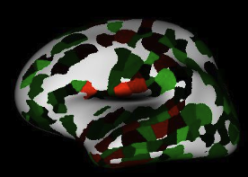

Towards Computational Parkinson's
A research lab partnered with top research institutions such as UC Davis utilizing molecular biology and machine learning to uncover insights into Parkinson's pathogenesis, therapeutics, and more.

Biomarker Discovery
Discover molecular biomarkers using machine learning and molecular biology tools to advance Parkinson's research.
Therapeutic Development
Accelerate therapeutic discoveries using computational frameworks and experimental biology to combat neurodegenerative diseases.
Frameworks
Build interpretable frameworks leveraging advanced AI to understand Parkinson’s pathology and guide researchers.